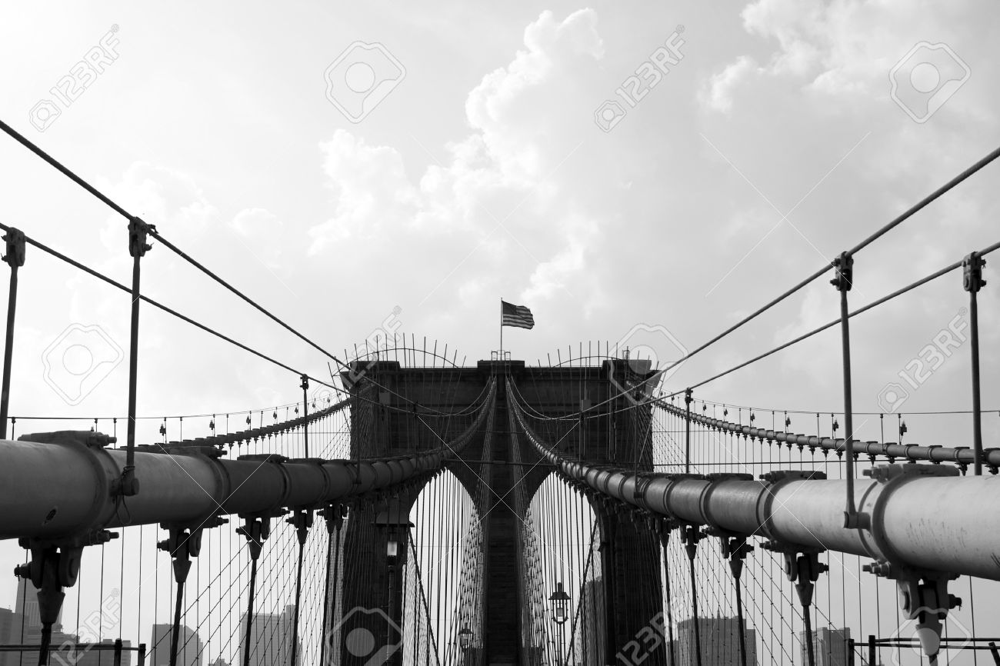

Histoire
New York officiellement City of New York, autrement connue sous les noms et abréviations de New York City ou NYC, est la plus grande ville des États-Unis et l'une des plus importantes du continent américain. Elle se situe dans le Nord-Est des États-Unis, sur la côte atlantique, à l'extrémité sud-est de l'État de New York. La ville de New York se compose de cinq arrondissements appelés boroughs : Manhattan, Brooklyn, Queens, le Bronx et Staten Island.Ses habitants s'appellent les New-Yorkais.
En 1664, les Anglais conquirent la Nouvelle-Amsterdam qui fut rebaptisée « New York » en l'honneur de Jacques, duc d'York et frère du roi Charles II. L'anglicanisme devint la religion officielle de la colonie en 1698. La ville se développa rapidement : en 1700, elle comptait près de 5 000 habitants. Les premières institutions culturelles furent fondées comme le King's College en 1754. Le commerce se diversifia et se développa notamment grâce à l'aménagement du Great Dock sur l'East River en 1676.

Géographie
En décembre 1975 la ville de New York est en faillite. Deux jours avant qu'elle ne se retrouve en cessation de paiement, le président d'alors, Gerald Ford, autorise le trésor américain à prêter à la cité 2,3 milliards de dollars par an jusqu'en 1978. Aujourd'hui le poids économique de New York est considérable : en 2008, la ville a créé une richesse estimée à 578 milliards de dollars, c'est-à-dire que son produit brut est supérieur à celui d'un pays comme la Belgique. Il n'y a que 14 pays dans le monde qui ont une économie plus puissante que celle de la seule ville de New York
La ville s'étend sur plusieurs îles : la plus peuplée est celle de Manhattan où se trouve le cœur économique et culturel de l'agglomération. Governors Island, Liberty Island et Ellis Island sont de petites îles au sud de Manhattan dont les lieux historiques sont visités par les touristes. Staten Island est l'île la plus au sud de New York. Les arrondissements de Brooklyn et Queensoccupent la partie occidentale de Long Island alors que le Bronx se trouve sur le continent, dans le Sud d'une presqu'île. Cette configuration insulaire nécessite la présence de nombreux ponts et tunnels qui relient les différentes parties de l'agglomération. Un service de traversiers permet également aux New-Yorkais de se déplacer facilement. Plusieurs détroits comme le Long Island Sound ou The Narrows séparent les différentes îles. Les eaux profondes de la baie de New York et les côtes très découpées fournissent de nombreuses autres petites baies abritées. Le site de New York apparaît à la fois comme un atout (ouverture maritime, défense naturelle) mais aussi comme un risque (inondations, élévation de la mer, raz-de-marée) pour la métropole

Démographie
La ville de New York est la ville la plus peuplée des États-Unis, avec une population deux fois supérieure à la deuxième ville du pays, Los Angeles (3 743 995 habitants). Elle compte en effet 8 175 133 habitants en 2010, ce qui représente près de 40 % de la population de l'État de New York. Le Grand New York ou New York Metropolitan area est l'aire urbaine la plus peuplée des États-Unis et la troisième du monde derrière Tokyo et Mexico. Cette région s'étend sur quatre États (New York, New Jersey, Connecticut, Pennsylvanie) et quelque 17 400 km2. Sa population est de 18,8 millions d'habitants en 20. La CMSA de New York rassemble environ 22,2 million d'habitants en 2009.